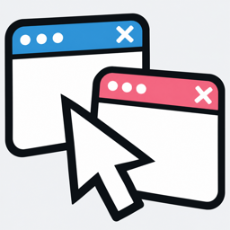

広告に捕まりました
The Ads Got Me ・ iPhone 向けゲーム
ブラウザの画面の中で、あなたはただのマウスカーソルです。次々に現れる広告から逃げ、バナーの裏に隠れ、× を押して閉じながら、どれだけ長く逃げ切れるかを競うエンドレスの避けゲームです。
遊び方
- 画面のどこかに指を置き、倒した方向へカーソルが動きます。
- 赤い輪郭の広告に触れると捕まります。点滅したら、もうすぐ消えます。
- バナーは壁です。裏に回ると、追いかけてくる広告をふさげます。
- × にカーソルの先端で触れると、広告を閉じられます。閉じるか、盾として残すかはあなた次第です。
- ときどき現れる商品(爆速シューズ、匿名マント、お試し一時停止、極小スーツ、どこでも防音パネル)を取ると、少しの間だけ助けてくれます。
初めて遊ぶときは、短い導入で操作を確かめられます。タイトルの「遊び方」からいつでも見直せます。
よくある質問
本物の広告はいつ出ますか?
何回か遊んだあと、捕まったときの終了の流れで、ときどき全画面の広告が出ます。遊んでいる途中には出ません。閉じると結果の画面に進みます。
効果音を消せますか?
タイトル画面の右上のスピーカーで、オンとオフを切り替えられます。iPhone の消音スイッチにも従います。聴いている音楽は止まりません。
「トラッキング」の確認が出ました
広告をあなた向けにするための確認です。許可しなくても遊べます。あとから変えるときは、iPhone の「設定」→「プライバシーとセキュリティ」→「トラッキング」で切り替えられます。
自己ベストや図鑑は引き継げますか?
記録はこの iPhone の中にだけ保存しています。アプリを削除すると消え、別の端末へは引き継げません。
広告に関するプライバシーの設定を変えたい
同意が必要な地域では、タイトル画面の「プライバシー設定」から変更できます。詳しくはプライバシーポリシーをご覧ください。
お問い合わせ
不具合やご質問は、メールでお知らせください。お使いの機種と iOS のバージョン、起きたときの様子を書いていただけると助かります。
sakutto.zukan@gmail.comライセンス
| 使用しているもの | ライセンス |
|---|---|
| Noto Sans JP(フォント) | SIL Open Font License 1.1 ・ openfontlicense.org |
| Google Mobile Ads Unity Plugin | Apache License 2.0 |
| Google Mobile Ads SDK / User Messaging Platform SDK | Google の利用規約に基づいて使用 |
| External Dependency Manager for Unity | Unity Companion License |
| ゲームエンジン | Unity |
効果音はすべてこのゲームのためにプログラムで合成したものです。
The Ads Got Me (English)
You are just a mouse cursor inside a web browser. Dodge the ads that keep popping up, hide behind banners, and close them with the ×. How long can you stay free? The game itself is in Japanese only.
How to play
- Put your finger anywhere on the screen and tilt it. The cursor moves in that direction.
- Ads with a red outline catch you on touch. Blinking ones are about to disappear.
- Banners are walls. Hide behind one to block the ads chasing you.
- Touch an × with the tip of the cursor to close an ad, or keep the ad as a shield.
- Grab the items that sometimes appear for a short boost.
FAQ
When do real ads appear? After a few plays, a full-screen ad sometimes appears after you get caught. Never during play.
Can I turn off sounds? Use the speaker button at the top right of the title screen. The game follows the silent switch and does not stop your music.
About the tracking prompt. It asks whether ads may be personalized. You can play either way, and change it later in Settings → Privacy & Security → Tracking.
Is my progress saved? Your best time and collection are stored only on this iPhone. They are removed when you delete the app.